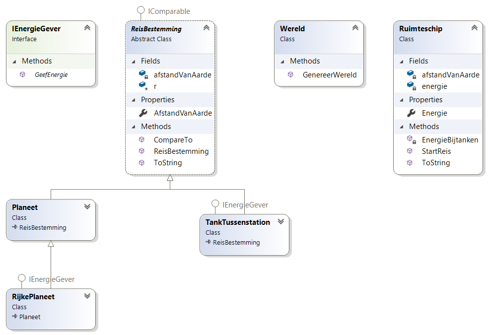

Volgende opgave was de vaardigheidsproefopdracht voor examen van dit vak (OOP) in augustus 2021
Inleiding
Knap hoor! We zijn er in geslaagd om eindelijk de aarde voorgoed achter ons te laten en naar nieuwe planeten, ver weg, te reizen. Voor we onze kostbare mensen de ruimte insturen heeft NASA en ESA jou gevraagd om een ruimte-reis-simulatie-pakket te maken. Hopelijk toont jouw applicatie aan dat onze raketten ver genoeg zullen geraken!
Algemene werking
Een ruimteschip zal in de simulatie vertrekken vanop aarde met een gegeven energie aan de start. Voorts wordt er een fictieve route van planeten en tussenstations aangemaakt waar de rakket, soms, kan bijtanken.
De applicatie bestaat uit 2 delen (we gaan verderop in de opgave in op de details van ieder deel)
Deel 1
Eerst wordt de fictieve wereld, de reisweg, aangemaakt die de tussenstops in volgorde toont. Er wordt telkens getoond om wat voor tussenstop het gaat en hoeveel lichtjaren de stop van de aarde verwijderd is. Voorbeeld:
Dit is je reisplan:
RijkePlaneet:1684
RijkePlaneet:1703
RijkePlaneet:1911
Planeet:3230
TankTussenstation:4067
Planeet:5339
TankTussenstation:5642
TankTussenstation:6765
TankTussenstation:7016
TankTussenstation:9504Vervolgens toont de applicatie de startsituatie van het ruimteschip (dat altijd met 3000 energie begint):
Dit is je schip:
Je hebt 3000 energie en bent 0 units verwijderd van de aarde.Deel 2
Vervolgens zal de simulatie een rakket dit traject laten vliegen. Dit gebeurt automatisch. Op plaatsen waar getankt kan worden (RijkePlaneet en TankTussenstation) zal het ruimteschip dit sowieso doen en dan verder vliegen. Wanneer het ruimteschip niet meer genoeg energie heeft om de volgende etappe af te leggen dan stopt de simulatie daar.
Eén lichtjaar reizen kost 1 energie.
Voorbeeld van de uitput (gegeven het voorbeeld in deel 1 hierboven):
De reis gaat van start:
We proberen te reizen naar bestemming 1
Bestemming bereikt. Nog 1316 energie over.
Laten we proberen bij te tanken
Hier werd bijgetankt. Je kreeg 168 energie en staat nu op 1484 energie.
We proberen te reizen naar bestemming 2
Bestemming bereikt. Nog 1465 energie over.
Laten we proberen bij te tanken
Hier werd bijgetankt. Je kreeg 170 energie en staat nu op 1635 energie.
We proberen te reizen naar bestemming 3
Bestemming bereikt. Nog 1427 energie over.
Laten we proberen bij te tanken
Hier werd bijgetankt. Je kreeg 191 energie en staat nu op 1618 energie.
We proberen te reizen naar bestemming 4
Bestemming bereikt. Nog 299 energie over.
Laten we proberen bij te tanken
Hier kan niet bijgetankt worden
We proberen te reizen naar bestemming 5
Dit schip heeft niet genoeg energie daarvoor.
De reis eindigt hier.
Je hebt 299 energie en bent 3230 units verwijderd van de aarde.
Je bent tot aan bestemming 5 geraakt met info: TankTussenstation:4067Opbouw
Klasse diagram
Volgende diagram toont alle klassen en interfaces die je moet maken:

We beschrijven nu de individuele klassen in de volgorde dat je ze best maakt, uiteraard ben je vrij om een andere vologrde te hanteren
IEnergiegever
Plekken waar het ruimteschip zal kunnen tanken hebben deze interface. De interface is als volgt gedefinieerd:
interface IEnergieGever
{
long GeefEnergie();
}Reisbestemming
Deze abstracte klasse wordt gedefinieerd door de afstand (in lichtjaren) van de aarde. Enkele opmerkingen:
ris eenstaticRandom-object zodat je dat overal kan gebruiken- heeft een read-only property
AfstandVanAarde - heeft een constructor die de instantievariabele
afstandVanAardeop een willekeurig getal tussen 400 en 10.000 zet. - heeft de
IComparable-interface en zal toelaten om (later) een lijst van Reisbestemmingen te sorteren op hun afstand van de aarde (zie verder). - heeft de
ToString-methode geïmplementeerd en geeft het object weer als [Type object]:[Afstand van Aarde], bijvoorbeeldRijkePlaneet:1911(zie de output deel 1 bovenaan).- Tip: met de
GetType().Nameproperty krijg je het type terug zonder de overbode namespace ervoor.
- Tip: met de
Planeet
Een Planeet is een Reisbestemming. Niets meer.
Ter info: er kan dus niet getankt worden daar het niet de IEnergieGeven-interface heeft.
RijkePlaneet
Een RijkePlaneet is een Planeet die de IEnergieGever-interface heeft. Dit type planeet geeft altijd 10% terug van de afstand tot de aarde. Als de planeet zich dus op 3246 lichtjaren bevind dan zal GeefEnergie 324 energie teruggeven.
TankTussenstation
Een TankTussenstation is een Reisbestemming die de IEnergieGever-interface heeft. Dit type geeft altijd een willekeurige hoeveelheid tussen 500 en 1500 energie terug bij GeefEnergie. Deze waarde is steeds anders telkens de methode wordt aangeroepen.
Wereld
Deze klasse heeft één methode met volgende signatuur:
public static List<ReisBestemming> GenereerWereld(int aantal)De methode geeft een lijst van Reisbestemming-en terug. De parameter aantal geeft aan hoeveel objecten in de lijst zitten.
De methode plaats een combinatie van Planeet, RijkePlaneet en TankTussenstation-objecten in de lijst. Het kiest willekeurig uit deze 3 types volgende volgende tabel:
- 25% kans op een
Planeet - 25% kans op een
RijkePlaneet - 50% kans op een
TankTussenstation
Finaal wordt de lijst gesorteerd waarbij de Reisbestemming die het dichts bij de aarde zit van voor komt, en zo verder. Deze gesorteerde lijst wordt als resultaat van de methode teruggegeven.
Tip: weet je niet hoe je moet sorteren? Geen probleem, geef gewoon de ongesorteerde lijst terug en werk hier op verder! (verlies dus niet te veel tijd met dit stuk)
Ruimteschip
Deze klasse heeft:
- Een read-only property met private set om de
Energie(type:long) bij te houden.- Een ruimteschip heeft altijd 3000 energie aan de start.
- Een instantievariabele
afstandVanAardedie bijhoudt hoeveel lichtjaren van de aarde het schip is.- Deze start altijd op 0 (daar we op aarde vertrekken).
- De methode
ToSTringdie volgende zinnetje teruggeeftJe hebt [Energie] energie en bent [afstandVanAarde] units verwijderd van de aarde.(met natuurlijk de effectieve waarden in plaat van de placeholders met vierkante haken). VoorbeeldJe hebt 294 energie en bent 3489 units verwijderd van de aarde.
De klasse heeft twee speciale methode:
StartReis:
Deze methode geeft een bool terug en aanvaardt een Reisbestemming-object als parameter. De methode werkt als volgt:
- Het geeft met de bool weer of het schip genoeg energie heeft om naar de reisbestemming te reizen. Een schip kan enkel naar die plek, het doelwit, reizen (de parameter) indien deze minstens evenveel energie heeft als het aantal lichtjaren dat het schip van de planeet verwijderd is.
- De te reizen afstand is natuurlijk het verschil tussen de
afStandVanAarde-instantie van het ruimteschip en deAfstandVanAardevan de bestemming.- Als het schip op afstand 2000 is van de aarde en het doelwit is op 2500 afstand van de aarde, dan heeft het schip 500 (2500-2000) energie nodig.
- Indien het schip niet genoeg energie heeft dan wordt er
falseteruggegeven nadat volgende zin op het scherm komt:"Dit schip heeft niet genoeg energie daarvoor." - Indien het schip wél genoeg energie heeft dan wordt de energie van het schip verminderd met de zonet berekende hoeveel energie die gegeven de afstand tussen beide nodig was (dus 500 in vorig getalvoorbeeld) en worden volgende 2 zinnen getoond:
Bestemming bereikt. Nog [Energie} energie over. Laten we proberen bij te tanken.- Vervolgens wordt de
afstandVanAardeverhoogt met de afgelegde afstand (namelijk de gespendeerde energie) - Voor je nu
trueteruggeeft (om aan te geven dat de reis gelukt is) roep je nu de methodeEnergieBijtanken(zie volgende stuk) en geeft de doelwitReisbestemmingmee als argument.
- Vervolgens wordt de
EnergieBijtanken
Deze methode geeft niets terug en aanvaardt een Reisbestemming-object als parameter. De methode werkt als volgt:
- Indien het meegeven object de
IEnergieGeven-interface heeft dan zal het schip hiervan gebruik makenen bijtanken. Het roept hierbij deGeefEnergie-methode van het doelwit op en zal de teruggekregen energie optellen bij z’n huidige energie en vervolgens volgende zinnetje tonen:Hier werd bijgetankt. Je kreeg [verkregenEnergie] energie en staat nu op [Energie] energie.Vervolgens stopt de methode. - Indien er op het object niet kan getankt worden verschijnt er
Hier kan niet bijgetankt wordenen stopt de methode.
Main code
Het wordt nu tijd om alles samen te gooien. Dat gaat hopelijk eenvoudig. Het hoofdprogramma werkt als volgt:
- Een nieuwe wereld wordt aangemaakt mbv van de
GenereerWereld-methode van deWereld-klasse - Ieder tussenstop van deze nieuwe wereld wordt op het scherm getoond (zie voorbeeld uitvoer vooraan de opgave)
- Een nieuw RuimteSchip-object wordt aangemaakt en ook op het scherm getoond.
- De reis gaat van start. Hierbij wordt een loop gestart die blijft duren:
- zolang het schip nog energie heeft (dus meer dan 0),
- zolang een teller minder is dan het totaal aantal bestemmingen in de wereld
- zolang het schip nog genoeg energie heeft om naar de volgende bestemming te gaan
- In de loop houdt je met een teller bij aan welke bestemming je bent en verhoogt deze teller telkens het schip naar de volende bestemming reist.
- Finaal toon je tot waar het schip is geraakt.
Volgende voorbeeldoutput toont nogmaals het geheel:
Dit is je reisplan:
TankTussenstation:1401
RijkePlaneet:1519
TankTussenstation:2390
Planeet:4167
TankTussenstation:5736
TankTussenstation:6386
Planeet:6426
Planeet:6466
RijkePlaneet:9646
RijkePlaneet:9872
Dit is je schip:
Je hebt 3000 energie en bent 0 units verwijderd van de aarde.
De reis gaat van start:
We proberen te reizen naar bestemming 1
Bestemming bereikt. Nog 1599 energie over.
Laten we proberen bij te tanken
Hier werd bijgetankt. Je kreeg 788 energie en staat nu op 2387 energie.
We proberen te reizen naar bestemming 2
Bestemming bereikt. Nog 2269 energie over.
Laten we proberen bij te tanken
Hier werd bijgetankt. Je kreeg 151 energie en staat nu op 2420 energie.
We proberen te reizen naar bestemming 3
Bestemming bereikt. Nog 1549 energie over.
Laten we proberen bij te tanken
Hier werd bijgetankt. Je kreeg 838 energie en staat nu op 2387 energie.
We proberen te reizen naar bestemming 4
Bestemming bereikt. Nog 610 energie over.
Laten we proberen bij te tanken
Hier kan niet bijgetankt worden
We proberen te reizen naar bestemming 5
Dit schip heeft niet genoeg energie daarvoor.
De reis eindigt hier.
Je hebt 610 energie en bent 4167 units verwijderd van de aarde.
Je bent tot aan bestemming 5 geraakt met info: TankTussenstation:5736Dank aan Wael Orraby.
Klassen:
public abstract class Reisbestemming : IComparable
{
public static Random R = new Random();
public Reisbestemming()
{
afstandVanAarde = R.Next(400, 10001);
}
private int afstandVanAarde;
public int AfstandVanAarde
{
get { return afstandVanAarde; }
}
public int CompareTo(object? obj)
{
int result = 0;
Reisbestemming temp = obj as Reisbestemming;
if (temp != null)
{
if (afstandVanAarde > temp.afstandVanAarde)
result= 1;
if (afstandVanAarde < temp.afstandVanAarde)
result= - 1;
}
else
throw new ArgumentException("Object is not a Reisbestemming");
return result;
}
public override string ToString()
{
return $"{this.GetType().Name}:{afstandVanAarde}" ;
}
}
internal class Planeet : Reisbestemming
{
}
internal class RijkePlaneet : Planeet, IEnergieGever
{
public long GeefEnergie()
{
return Convert.ToInt64(this.AfstandVanAarde * 0.1);
}
}
internal class TankTussenstation : Reisbestemming, IEnergieGever
{
public long GeefEnergie()
{
return Convert.ToInt64(R.Next(500, 1501));
}
}
internal class Ruimteschip
{
private int afstandVanAarde = 0;
public long Energie { get; private set; } = 300;
public override string ToString()
{
return $"Je hebt {Energie} energie en bent {afstandVanAarde} units verwijderd van de aarde.";
}
public bool StartReis(Reisbestemming r)
{
bool result = false;
int verschil = r.AfstandVanAarde - afstandVanAarde;
if (Energie >= verschil)
{
Energie -= verschil;
Console.WriteLine($"Bestemming bereikt. Nog {Energie} energie over. Laten we proberen bij te tanken.");
afstandVanAarde += r.AfstandVanAarde;
EnergieBijtanken(r);
result = true;
}
else
Console.WriteLine("Dit schip heeft niet genoeg energie daarvoor.");
return result;
}
public void EnergieBijtanken(Reisbestemming r)
{
if(r is IEnergieGever energieGever)
{
Energie += energieGever.GeefEnergie();
Console.WriteLine($"Hier werd bijgetankt. Je kreeg {energieGever.GeefEnergie()} energie en staat nu op {Energie} energie.");
}
else
Console.WriteLine("Hier kan niet bijgetankt worden");
}
}
internal class Wereld
{
static Random r = new Random();
public static List<Reisbestemming> GenereerWereld(int aantal)
{
List<Reisbestemming> ReisbestemmingList = new List<Reisbestemming>();
for (int i = 0; i < aantal; i++)
{
int kans = r.Next(1,5);
if (kans == 1)
ReisbestemmingList.Add(new Planeet());
else if (kans == 2)
ReisbestemmingList.Add(new RijkePlaneet());
else
ReisbestemmingList.Add(new TankTussenstation());
}
ReisbestemmingList.Sort();
return ReisbestemmingList;
}
}Program.cs:
var world = Wereld.GenereerWereld(10);
Console.WriteLine("Dit is je reisplan:");
foreach (var item in world)
{
Console.WriteLine(item);
}
Console.WriteLine();
Ruimteschip r = new Ruimteschip();
Console.WriteLine("Dit is je schip:");
Console.WriteLine(r);
Console.WriteLine();
int teller = 0;
bool kanVerder = true;
Console.WriteLine("De reis gaat van start:");
Console.WriteLine();
while (r.Energie > 0 && teller < world.Count && kanVerder)
{
Console.WriteLine($"We proberen te reizen naar bestemming {teller + 1}");
kanVerder = r.StartReis(world[teller]);
teller++;
Console.WriteLine();
}
Console.WriteLine(r);